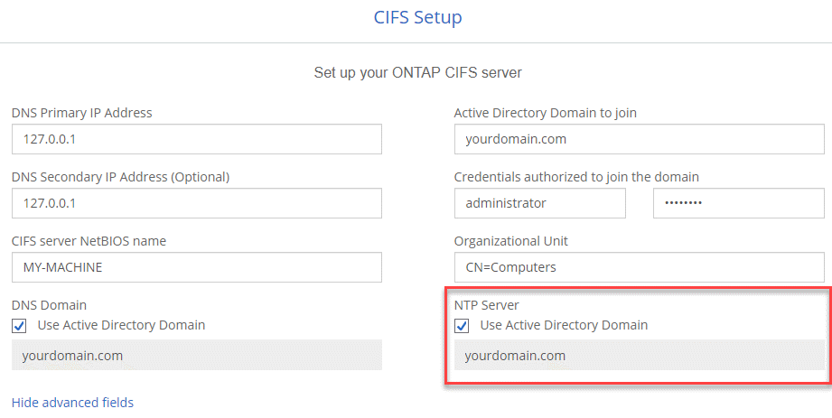
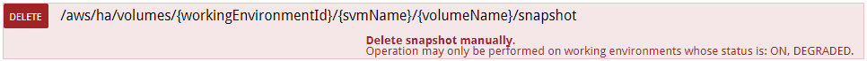
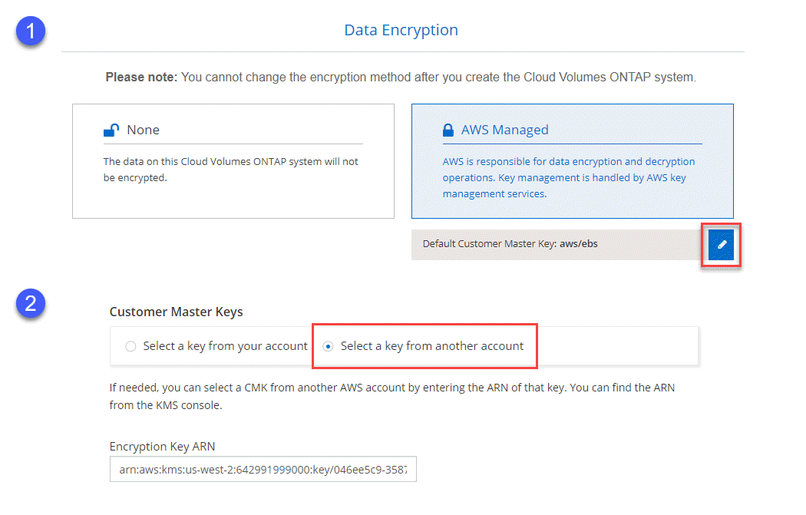
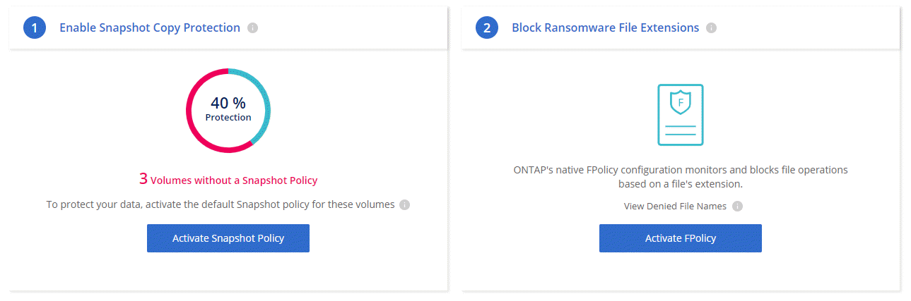
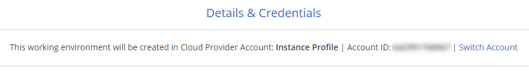

Dokumentationsänderungen beantragen
Dokumentationsänderungen beantragen In GitHub bearbeiten
In GitHub bearbeiten Leitfaden für Beitragende
Leitfaden für BeitragendeGehen Sie zur Dokumentation für die neueste Version.
Neues in Cloud Manager 3.6
Beitragende
OnCommand Cloud Manager führt in der Regel jeden Monat eine neue Version ein, um Ihnen neue Funktionen, Verbesserungen und Bugfixes zu bieten.

|
Suchen Sie nach einer früheren Version?"Neuerungen in 3.5" "Neuerungen in 3.4" |
Unterstützung für die AWS C2S-Umgebung (2. Mai 2019)
Cloud Volumes ONTAP 9.5 und Cloud Manager 3.6.4 stehen jetzt den USA zur Verfügung Intelligence Community (IC) über die AWS Commercial Cloud Services Umgebung (C2S) Sie können HA-Paare und Single-Node-Systeme in C2S implementieren.
Cloud Manager 3.6.6 (1. Mai 2019)
-
for 6 TB disks in AWS
-
for new disk sizes with single node systems in Azure
-
for Standard SSDs with single node systems in Azure
-
discovery of Kubernetes clusters created with the NetApp Kubernetes Service
-
to configure an NTP server
Unterstützung von 6-TB-Festplatten in AWS
Sie können nun eine EBS-Festplattenkapazität von 6 TB mit Cloud Volumes ONTAP für AWS auswählen. Mit der kürzlich "Gesteigerte Performance von General Purpose SSDs", Eine 6-TB-Festplatte ist jetzt die beste Wahl für maximale Leistung.
Diese Änderung wird unterstützt durch Cloud Volumes ONTAP 9.5, 9.4 und 9.3.
Unterstützung neuer Festplattengrößen mit Single-Node-Systemen in Azure
In Azure können Sie nun 8-TB-, 16-TB- und 32-TB-Festplatten mit Single-Node-Systemen verwenden. Die höhere Festplattengröße ermöglicht bei Nutzung der Premium- oder BYOL-Lizenzen das Erreichen von bis zu 368 TB Systemkapazität ohne Festplatten.
Diese Änderung wird unterstützt durch Cloud Volumes ONTAP 9.5, 9.4 und 9.3.
Unterstützung von Standard-SSDs mit Single-Node-Systemen in Azure
Standard-SSD-gemanagte Festplatten werden jetzt von Single-Node-Systemen in Azure unterstützt. Diese Festplatten bieten eine Performance-Stufe zwischen Premium SSDs und Standard HDDs.
Diese Änderung wird unterstützt durch Cloud Volumes ONTAP 9.5, 9.4 und 9.3.
Automatische Erkennung von Kubernetes-Clustern, die mit dem NetApp Kubernetes Service erstellt wurden
Cloud Manager erkennt jetzt automatisch die Kubernetes-Cluster, die Sie mit dem NetApp Kubernetes Service implementieren. Dadurch können Sie die Kubernetes-Cluster mit Ihren Cloud Volumes ONTAP-Systemen verbinden, sodass sie als persistenter Storage für Ihre Container verwendet werden können.
Das folgende Bild zeigt ein automatisch ermittelte Kubernetes-Cluster. Über den Link „Go to NKS“ gelangen Sie direkt zum NetApp Kubernetes Service.

Möglichkeit zum Konfigurieren eines NTP-Servers
Sie können Cloud Volumes ONTAP jetzt für die Verwendung eines NTP-Servers (Network Time Protocol) konfigurieren. Durch das Festlegen eines NTP-Servers wird die Zeit zwischen den Systemen im Netzwerk synchronisiert, wodurch Probleme aufgrund von Zeitunterschieden vermieden werden können.
Geben Sie beim Einrichten eines CIFS-Servers einen NTP-Server mithilfe der Cloud Manager-API oder von der Benutzeroberfläche an:
-
Der "Cloud Manager APIs" Aktivieren Sie, um eine beliebige Adresse für den NTP-Server anzugeben. Hier ist die API für ein Single-Node-System in AWS:

-
Beim Konfigurieren eines CIFS-Servers können Sie über die Cloud Manager-Benutzeroberfläche einen NTP-Server angeben, der die Active Directory-Domäne verwendet. Wenn Sie eine andere Adresse verwenden müssen, sollten Sie die API verwenden.
Das folgende Bild zeigt das NTP-Server-Feld, das beim Einrichten von CIFS verfügbar ist.

Cloud Manager 3.6.5 (2. April 2019)
Cloud Manager 3.6.5 umfasst die folgenden Verbesserungen:
-
enhancements
-
Support Site accounts are now managed at the system level
-
transit gateways can enable access to floating IP addresses
-
resource groups are now locked
-
4 and NFS 4.1 are now enabled by default
-
new API enables you to delete ONTAP Snapshot copies
Kubernetes-Verbesserungen
Wir haben einige Verbesserungen vorgenommen, die die Verwendung von Cloud Volumes ONTAP als persistenten Storage für Container vereinfachen:
-
Sie können Cloud Manager nun mehrere Kubernetes-Cluster hinzufügen.
So können Sie verschiedene Cluster mit verschiedenen Cloud Volumes ONTAP Systemen und mehreren Clustern mit demselben Cloud Volumes ONTAP System verbinden.
-
Wenn Sie ein Cluster verbinden, können Sie nun Cloud Volumes ONTAP als Standard-Storage-Klasse für das Kubernetes Cluster festlegen.
Wenn ein Benutzer ein persistentes Volume erstellt, kann der Kubernetes-Cluster Cloud Volumes ONTAP standardmäßig als Back-End-Storage verwenden:

-
Wir haben geändert, wie Cloud Manager die Kubernetes-Storage-Klassen benennt, um leichter erkennbar zu sein:
-
netapp-File: Zur Anbindung eines Persistent Volumes an ein Single-Node Cloud Volumes ONTAP System
-
netapp-dateiredundant: Zur Anbindung eines persistenten Volumes an ein Cloud Volumes ONTAP HA-Paar
-
-
Die Version von NetApp Trident, die von Cloud Manager installiert wird, wurde auf die neueste Version aktualisiert.
Konten der NetApp Support Site werden jetzt auf Systemebene verwaltet
Es ist jetzt einfacher, NetApp Support Site Konten in Cloud Manager zu managen.
In vorherigen Versionen mussten Sie ein NetApp Support Site Konto mit einem bestimmten Mandanten verknüpfen. Die Konten werden jetzt auf Systemebene wie bei Cloud Manager gemanagt, an derselben Stelle, an der Sie Cloud-Provider-Konten verwalten. Durch diese Änderung können Sie bei der Registrierung Ihrer Cloud Volumes ONTAP Systeme zwischen mehreren NetApp Support Site Accounts wählen.

Wenn Sie eine neue Arbeitsumgebung erstellen, wählen Sie einfach den NetApp Support Site Account aus, um das Cloud Volumes ONTAP System zu registrieren mit:

Wenn Cloud Manager auf 3.6 aktualisiert 5 wird, werden automatisch Konten der NetApp Support-Website für Sie hinzugefügt, wenn Sie zuvor Mandanten mit einem Konto verknüpft hatten.
AWS Transit-Gateways können den Zugriff auf fließende IP-Adressen ermöglichen
Ein HA-Paar in mehreren AWS Availability Zones verwendet Floating IP-Adressen für NAS-Datenzugriff und für Managementschnittstellen. Bis jetzt ist der Zugriff auf die fließenden IP-Adressen nicht über außerhalb der VPC möglich, wo sich das HA-Paar befindet.
Wir haben überprüft, dass Sie ein verwenden können "AWS Transit-Gateway" Um den Zugriff auf die unverankerten IP-Adressen von außerhalb der VPC zu ermöglichen. Das bedeutet, dass NetApp Management-Tools und NAS-Clients, die sich außerhalb der VPC befinden, auf die fließenden IPs zugreifen und von automatischem Failover profitieren können.
Azure-Ressourcengruppen sind jetzt gesperrt
Cloud Manager sperrt jetzt Cloud Volumes ONTAP-Ressourcengruppen in Azure, wenn sie erstellt werden. Durch das Sperren von Ressourcengruppen können Benutzer nicht versehentlich kritische Ressourcen löschen oder ändern.
NFS 4 und NFS 4.1 sind nun standardmäßig aktiviert
Cloud Manager ermöglicht jetzt alle neu erstellten Cloud Volumes ONTAP Systeme die Protokolle NFS 4 und NFS 4.1. Diese Änderung spart Zeit, da Sie diese Protokolle nicht mehr manuell aktivieren müssen.
Eine neue API ermöglicht das Löschen von ONTAP Snapshot Kopien
Sie können jetzt Snapshot-Kopien von Lese-Schreib-Volumes mithilfe eines Cloud Manager-API-Aufrufs löschen.
Das folgende Beispiel zeigt die API-Aufruf für ein HA-System in AWS:

Ähnliche API-Aufrufe sind für Single-Node-Systeme in AWS sowie für Single-Node- und HA-Systeme in Azure verfügbar.
Update zu Cloud Manager 3.6.4 (18. März 2019)
Cloud Manager wurde aktualisiert und unterstützt so die Patch-Version 9.5 P1 für Cloud Volumes ONTAP. Mit diesem Patch-Release sind HA-Paare in Azure nun allgemein verfügbar (GA).
Siehe "Versionshinweise zu Cloud Volumes ONTAP 9.5" Weitere Details, einschließlich wichtiger Informationen zur Unterstützung von Azure Region für HA-Paare
Cloud Manager 3.6.4 (3. März 2019)
Cloud Manager 3.6.4 umfasst die folgenden Verbesserungen:
-
encryption with a key from another account
-
of failed disks
-
storage accounts enabled for HTTPS when data tiering to Blob containers
Von AWS gemanagte Verschlüsselung mit einem Schlüssel von einem anderen Konto
Wenn Sie ein Cloud Volumes ONTAP System in AWS starten, können Sie es jetzt aktivieren "Von AWS gemanagte Verschlüsselung" Verwenden eines Kunden-Master Key (CMK) von einem anderen AWS-Benutzerkonto.
Die folgenden Bilder zeigen, wie die Option beim Erstellen einer neuen Arbeitsumgebung ausgewählt wird:

Wiederherstellung ausgefallener Festplatten
Cloud Manager versucht jetzt, ausgefallene Festplatten aus Cloud Volumes ONTAP Systemen wiederherzustellen. Erfolgreiche Versuche werden in E-Mail-Benachrichtigungsberichten festgehalten. Hier sehen Sie eine Beispielbenachrichtigung:

|
|
Sie können Benachrichtigungsberichte aktivieren, indem Sie Ihr Benutzerkonto bearbeiten. |
Azure Storage-Konten für HTTPS aktiviert, wenn Daten-Tiering zu Blob Containern erfolgt
Wenn Sie ein Cloud Volumes ONTAP System für das Tiering inaktiver Daten zu einem Azure Blob Container einrichten, erstellt Cloud Manager ein Azure Storage-Konto für diesen Container. Ab diesem Release ermöglicht Cloud Manager jetzt neue Speicherkonten mit sicherem Transfer (HTTPS). Vorhandene Speicherkonten verwenden weiterhin HTTP.
Cloud Manager 3.6.3 (4. Februar 2019)
Cloud Manager 3.6.3 umfasst die folgenden Verbesserungen:
-
for Cloud Volumes ONTAP 9.5 GA
-
TB capacity limit for all Premium and BYOL configurations
-
for new AWS regions
-
for S3 Intelligent-Tiering
-
to disable data tiering on the initial aggregate
-
EC2 instance type now t3.medium for Cloud Manager
-
of scheduled shutdowns during data transfers
Unterstützung für Cloud Volumes ONTAP 9.5 GA
Cloud Manager unterstützt jetzt die allgemein verfügbare Version von Cloud Volumes ONTAP 9.5. Dies schließt auch die Unterstützung der M5- und R5-Instanzen in AWS ein. Weitere Informationen zur Version 9.5 finden Sie im "Versionshinweise zu Cloud Volumes ONTAP 9.5".
368 TB Kapazitätsgrenze für alle Premium- und BYOL-Konfigurationen
Die Systemkapazitätsgrenze für Cloud Volumes ONTAP Premium und BYOL beträgt jetzt 368 TB für alle Konfigurationen: Single Node und HA in AWS und Azure. Diese Änderung gilt für Cloud Volumes ONTAP 9.5, 9.4 und 9.3 (nur AWS mit 9.3).
Bei einigen Konfigurationen verhindern Festplattenlimits, dass Sie durch die Nutzung von Festplatten allein das Kapazitätslimit von 368 TB erreichen. In diesen Fällen erreichen Sie das Kapazitätslimit von 368 TB um "tiering inaktiver Daten in Objektspeicher". Ein Single-Node-System in Azure könnte beispielsweise eine festplattenbasierte Kapazität von 252 TB aufweisen, sodass bis zu 116 TB inaktiver Daten im Azure Blob Storage genutzt werden können.
Weitere Informationen zu Festplattenlimits finden Sie unter Storage-Limits im "Versionshinweise zu Cloud Volumes ONTAP".
Unterstützung für neue AWS Regionen
Cloud Manager und Cloud Volumes ONTAP werden jetzt in folgenden AWS Regionen unterstützt:
-
Europa (Stockholm)
Systeme mit einzelnen Nodes sind nur verfügbar. HA-Paare werden derzeit nicht unterstützt.
-
GovCloud (Osten der USA)
Dies wird zusätzlich zur Unterstützung für die Region AWS GovCloud (USA-West) angeboten.
Unterstützung für intelligentes S3-Tiering
Wenn Sie Daten-Tiering in AWS aktivieren, führt Cloud Volumes ONTAP standardmäßig inaktive Daten auf die S3 Standard-Storage-Klasse aus. Sie können nun die Tiering-Stufe in die Klasse Intelligent Tiering Storage ändern. Diese Storage-Klasse optimiert Storage-Kosten, indem Daten bei sich ändernden Datenzugriffsmustern zwischen zwei Tiers verschoben werden. Eine Ebene ist für häufigen Zugriff und die andere für unregelmäßigen Zugriff.
Wie in vorherigen Versionen können Sie auch die Standard-infrequent Access Tier und die one Zone-infrequent Access Tier verwenden.
Möglichkeit, Daten-Tiering auf dem ursprünglichen Aggregat zu deaktivieren
In vorherigen Versionen aktivierte Cloud Manager das Daten-Tiering automatisch auf dem ersten Cloud Volumes ONTAP Aggregat. Sie können jetzt entscheiden, das Daten-Tiering auf diesem ersten Aggregat zu deaktivieren. (Sie können das Daten-Tiering auch bei nachfolgenden Aggregaten aktivieren oder deaktivieren.)
Diese neue Option ist bei der Auswahl der zugrunde liegenden Storage-Ressourcen verfügbar. Die folgende Abbildung zeigt ein Beispiel zum Starten eines Systems in AWS:

Empfohlener EC2-Instanztyp jetzt t3.Medium für Cloud Manager
Der Instanztyp für Cloud Manager ist jetzt t3.Medium, wenn Cloud Manager in AWS über NetApp Cloud Central bereitgestellt wird. Es ist auch der empfohlene Instanztyp in AWS Marketplace. Somit wird der Support in den neuesten AWS Regionen ermöglicht und die Instanzkosten sinken. Der empfohlene Instanztyp war vorher t2.Medium, der noch unterstützt wird.
Verschiebung geplanter Abschaltungen während der Datenübertragung
Wenn Sie ein automatisches Herunterfahren des Cloud Volumes ONTAP Systems geplant haben, verschiebt Cloud Manager jetzt das Herunterfahren, wenn ein aktiver Datentransfer stattfinden soll. Cloud Manager schaltet das System nach Abschluss der Übertragung aus.
Cloud Manager 3.6.2 (2. Jan. 2019)
Cloud Manager 3.6.2 umfasst neue Funktionen und Verbesserungen.
-
spread placement group for Cloud Volumes ONTAP HA in a single AZ
-
protection
-
data replication policies
-
access control for Kubernetes
AWS Spread Placement Group für Cloud Volumes ONTAP HA in einer einzelnen Verfügbarkeitszone
Wenn Sie Cloud Volumes ONTAP HA in einer einzelnen AWS Verfügbarkeitszone implementieren, erstellt Cloud Manager jetzt eine "AWS Spread-Platzierungsgruppe" Und startet die beiden HA-Nodes in dieser Platzierungsgruppe. Die Platzierungsgruppe verringert das Risiko gleichzeitiger Ausfälle, indem sie die Instanzen auf unterschiedliche zugrunde liegende Hardware verteilt.

|
Diese Funktion verbessert die Redundanz aus Sicht des Computing und nicht aus Sicht des Festplattenausfalls. |
Cloud Manager erfordert neue Berechtigungen für diese Funktion. Vergewissern Sie sich, dass die IAM-Richtlinie, die Cloud Manager über Berechtigungen verfügt, die folgenden Aktionen umfasst:
"ec2:CreatePlacementGroup",
"ec2:DeletePlacementGroup"Die gesamte Liste der erforderlichen Berechtigungen finden Sie im "Aktuelle AWS Richtlinie für Cloud Manager".
Schutz durch Ransomware
Ransomware-Angriffe können das Unternehmen Zeit, Ressourcen und Image-Schäden kosten. Cloud Manager ermöglicht Ihnen nun die Implementierung der NetApp Lösung für Ransomware, die mit effektiven Tools für Transparenz, Erkennung und Korrektur ausgestattet ist.
-
Cloud Manager ermittelt Volumes, die nicht durch eine Snapshot-Richtlinie geschützt sind, und ermöglicht Ihnen die Aktivierung der Standard-Snapshot-Richtlinie für diese Volumes.
Snapshot Kopien sind schreibgeschützt, der Ransomware-Beschädigungen verhindert. Sie können außerdem die Granularität nutzen, um Images einer einzelnen Dateikopie oder einer kompletten Disaster-Recovery-Lösung zu erstellen.
-
Cloud Manager ermöglicht es Ihnen auch, gängige Ransomware-Dateiendungen durch die Unterstützung der ONTAP FPolicy Lösung zu blockieren.

Neue Datenreplizierungsrichtlinien
Cloud Manager enthält fünf neue Datenreplizierungsrichtlinien für die Datensicherung.
Durch drei der Richtlinien wird die Disaster Recovery und die langfristige Aufbewahrung von Backups auf demselben Ziel-Volume konfiguriert. Jede Richtlinie bietet eine andere Aufbewahrungsdauer für Backups:
-
Mirror und Backup (7-Jahres-Aufbewahrung)
-
Spiegelung und Backup (7 Jahre Aufbewahrung mit mehr wöchentlichen Backups)
-
Mirror und Backup (1 Jahr Aufbewahrung, monatlich)
Die verbleibenden Richtlinien bieten mehr Optionen für die langfristige Aufbewahrung von Backups:
-
Backup (1-monatige Aufbewahrung)
-
Backup (Aufbewahrung von 1 Woche)
Ziehen Sie einfach eine Arbeitsumgebung per Drag-and-Drop, um eine der neuen Richtlinien auszuwählen.
Volume-Zugriffssteuerung für Kubernetes
Die Exportrichtlinie für Kubernetes-persistente Volumes lässt sich nun konfigurieren. Die Exportrichtlinie kann den Zugriff auf Clients ermöglichen, wenn sich das Kubernetes-Cluster in einem anderen Netzwerk als das Cloud Volumes ONTAP System befindet.
Sie können die Exportrichtlinie konfigurieren, wenn Sie eine Arbeitsumgebung mit einem Kubernetes-Cluster verbinden und ein vorhandenes Volume bearbeiten.
Cloud Manager 3.6.1 (4. Dezember 2018)
Cloud Manager 3.6.1 umfasst neue Funktionen und Verbesserungen.
-
for Cloud Volumes ONTAP 9.5 in Azure
-
Provider Accounts
-
to the AWS Cost report
-
for new Azure regions
Unterstützung von Cloud Volumes ONTAP 9.5 in Azure
Cloud Manager unterstützt jetzt die Version Cloud Volumes ONTAP 9.5 in Microsoft Azure, die eine Vorschau auf HA-Paare enthält. Sie können eine Vorschaulizenz für ein Azure HA-Paar anfordern. Senden Sie dazu eine eMail an ng-Cloud-Volume-ONTAP-preview@netapp.com.
Weitere Informationen zur Version 9.5 finden Sie im "Versionshinweise zu Cloud Volumes ONTAP 9.5".
Für Cloud Volumes ONTAP 9.5 sind neue Azure Berechtigungen erforderlich
Cloud Manager erfordert neue Azure Berechtigungen für die wichtigsten Funktionen von Cloud Volumes ONTAP 9.5. Um sicherzustellen, dass Cloud Manager Cloud Volumes ONTAP 9.5-Systeme implementieren und managen kann, sollten Sie Ihre Cloud Manager-Richtlinie aktualisieren, indem Sie die folgenden Berechtigungen hinzufügen:
"Microsoft.Network/loadBalancers/read",
"Microsoft.Network/loadBalancers/write",
"Microsoft.Network/loadBalancers/delete",
"Microsoft.Network/loadBalancers/backendAddressPools/read",
"Microsoft.Network/loadBalancers/backendAddressPools/join/action",
"Microsoft.Network/loadBalancers/frontendIPConfigurations/read",
"Microsoft.Network/loadBalancers/loadBalancingRules/read",
"Microsoft.Network/loadBalancers/probes/read",
"Microsoft.Network/loadBalancers/probes/join/action",
"Microsoft.Network/routeTables/join/action"
"Microsoft.Authorization/roleDefinitions/write",
"Microsoft.Authorization/roleAssignments/write",
"Microsoft.Web/sites/*"
"Microsoft.Storage/storageAccounts/delete",
"Microsoft.Storage/usages/read",Die gesamte Liste der erforderlichen Berechtigungen finden Sie im "Aktuelle Azure-Richtlinie für Cloud Manager".
Accounts Von Cloud-Providern
Es ist jetzt einfacher, mehrere AWS und Azure Konten in Cloud Manager über Cloud-Provider-Konten zu managen.
In vorherigen Versionen mussten Sie für jedes Cloud Manager Benutzerkonto Berechtigungen für Cloud-Provider angeben. Die Berechtigungen werden jetzt auf Cloud Manager Systemebene über Cloud Provider Accounts verwaltet.

Wenn Sie eine neue Arbeitsumgebung erstellen, wählen Sie einfach das Konto aus, in dem Sie das Cloud Volumes ONTAP-System bereitstellen möchten:

Beim Upgrade auf 3.6 erstellt Cloud Manager basierend auf der aktuellen Konfiguration automatisch Cloud Provider-Konten für Sie. Wenn Sie Skripts haben, ist die Abwärtskompatibilität vorhanden, sodass nichts unterbrochen wird.
Verbesserungen am AWS Kostenbericht
Der AWS Kostenbericht bietet jetzt mehr Informationen und lässt sich einfacher einrichten.
-
Der Bericht unterteilt die monatlichen Ressourcenkosten, die für den Einsatz von Cloud Volumes ONTAP in AWS anfallen. Sie können die monatlichen Kosten für Computing, EBS Storage (einschließlich EBS Snapshots), S3 Storage und Datentransfers anzeigen.
-
Der Bericht zeigt jetzt Kosteneinsparungen an, wenn Sie inaktive Daten nach S3 verschieben.
-
Wir haben auch vereinfacht, wie Cloud Manager Kostendaten aus AWS holt.
Cloud Manager benötigt keinen Zugriff mehr auf die Rechnungsberichte, die Sie in einem S3-Bucket speichern. Stattdessen verwendet Cloud Manager die Cost Explorer API. Sie müssen lediglich sicherstellen, dass die IAM-Richtlinie, die Cloud Manager über Berechtigungen verfügt, die folgenden Aktionen beinhaltet:
"ce:GetReservationUtilization", "ce:GetDimensionValues", "ce:GetCostAndUsage", "ce:GetTags"Diese Aktionen sind in den letzten enthalten "Von NetApp bereitgestellte Richtlinie". Neue Systeme, die von NetApp Cloud Central implementiert werden, enthalten automatisch diese Berechtigungen.

Unterstützung für neue Azure Regionen
Sie können jetzt Cloud Manager und Cloud Volumes ONTAP in der Region Frankreich Central implementieren.
Cloud Manager 3.6 (4. November 2018)
Cloud Manager 3.6 enthält eine neue Funktion.
Verwendung von Cloud Volumes ONTAP als persistenter Storage für einen Kubernetes-Cluster
Cloud Manager kann die Implementierung von jetzt automatisieren "NetApp Trident" In einem einzelnen Kubernetes-Cluster können Sie Cloud Volumes ONTAP als persistenten Storage für Container verwenden. So können Benutzer persistente Volumes über native Kubernetes-Schnittstellen und -Konstrukte anfordern und managen und gleichzeitig die erweiterten Datenmanagement-Funktionen von ONTAP nutzen, ohne etwas darüber wissen zu müssen.